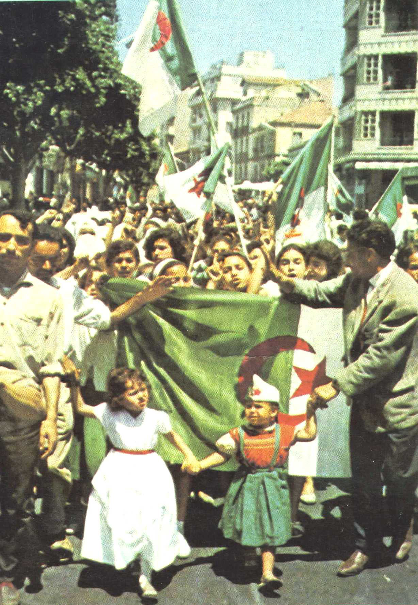

تاريخ مجيد
عهد جديد
year 2
year 3
النشاطات

جزائر يا مطلع المعجزات ويا حجة الله في الكائنات ويا بسمة الرب في أرضه ويا وجهه الضاحك القسمات شغلنا الورى وملأ نا الدنيا بشعر نزلته كالصلاة تسابيحه من حنايا الجزائر
اندلعت ثورة التحرير الجزائرية في 1 نوفمبر 1954 ضد الاستعمار الفرنسي الذي احتلّ البلاد منذ سنة 1830 «احتلال دام 132 سنة»، ودامت ثورة التحرير الجزائرية طيلة سبعة سنوات ونصف من الكفاح المسلح والعمل السياسي، وانتهت بإعلان استقلال الجزائر يوم 5 جويلية 1962 بعد أن سقط فيها أكثر من مليون ونصف مليون شهيد جزائري
يوم الدبلوماسية الجزائرية هو يوم يوافق 8 أكتوبر من كل سنة تحتفل الجزائر حكومة وشعبا بالإنجازات الدبلوماسية للدولة الجزائرية
شهد تاريخ الجزائر شخصيات وأعلام ساهمت في بناء التاريخ والحضارة وخلدت أسماءهم بحروف من ذهب
تشمل الأدب والموسيقى، والمطبخ، والدين وجوانب أخرى من حياة الجزائري، وهي غنية ومتنوعة وعريقة جدا، في كل منطقة وكل مدينة أو واحة مساحة ثقافية معينة. منطقة القبائل، الأوراس، منطقة الجزائر العاصمة، الهضاب العليا، وادي مزاب
هو ذلك الموروث الحضاري للدولة الجزائرية المتداول عبر الأجيال من عادات وتقاليد وفنون وعلوم ونمط حياة وعمران وآثار وهي تمثل قيم المجتمع ويعتبر ركيزة أساسية للهويه
اندلعت ثورة التحرير الجزائرية في 1 نوفمبر 1954 ضد الاستعمار الفرنسي الذي احتلّ البلاد منذ سنة 1830 «احتلال دام 132 سنة»، ودامت ثورة التحرير الجزائرية طيلة سبعة سنوات ونصف من الكفاح المسلح والعمل السياسي، وانتهت بإعلان استقلال الجزائر يوم 5 جويلية 1962 بعد أن سقط فيها أكثر من مليون ونصف مليون شهيد جزائري
يوم الدبلوماسية الجزائرية هو يوم يوافق 8 أكتوبر من كل سنة تحتفل الجزائر حكومة وشعبا بالإنجازات الدبلوماسية للدولة الجزائرية
شهد تاريخ الجزائر شخصيات وأعلام ساهمت في بناء التاريخ والحضارة وخلدت أسماءهم بحروف من ذهب
تشمل الأدب والموسيقى، والمطبخ، والدين وجوانب أخرى من حياة الجزائري، وهي غنية ومتنوعة وعريقة جدا، في كل منطقة وكل مدينة أو واحة مساحة ثقافية معينة. منطقة القبائل، الأوراس، منطقة الجزائر العاصمة، الهضاب العليا، وادي مزاب
هو ذلك الموروث الحضاري للدولة الجزائرية المتداول عبر الأجيال من عادات وتقاليد وفنون وعلوم ونمط حياة وعمران وآثار وهي تمثل قيم المجتمع ويعتبر ركيزة أساسية للهويه
مقام الشهيد
لا يدان أي شخص بجريمة بسبب أي عمل أو امتناع عن عمل لم يكن في حينه يشكل جرما بمقتضى
القانون الوطني أو الدولي، كما لا توقع عليه أية عقوبة أشد من تلك التي كانت سارية في الوقت الذي ارتكب
فيه الفعل الجرمي.
ليس في هذا الإعلان أي نص يجوز تأويله على نحو يفيد انطواءه على تخويل أية دولة أو جماعة، أو أي فرد، أي
حق في القيام بأي نشاط أو بأي فعل يهدف إلى هدم أي من الحقوق والحريات المنصوص عليها فيه.
لكل فرد حق التمتع بنظام اجتماعي ودولي يمكن أن تتحقق في ظله الحقوق والحريات المنصوص عليها في هذا
الإعلان تحققا تاما.
لكل شخص حق في حرية الاشتراك في الاجتماعات والجمعيات السلمية.
لكل شخص حق اللجوء إلى المحاكم الوطنية المختصة لإنصافه الفعلي من أية أعمال تنتهك الحقوق الأساسية التي
يمنحها إياه الدستور أو القانون.